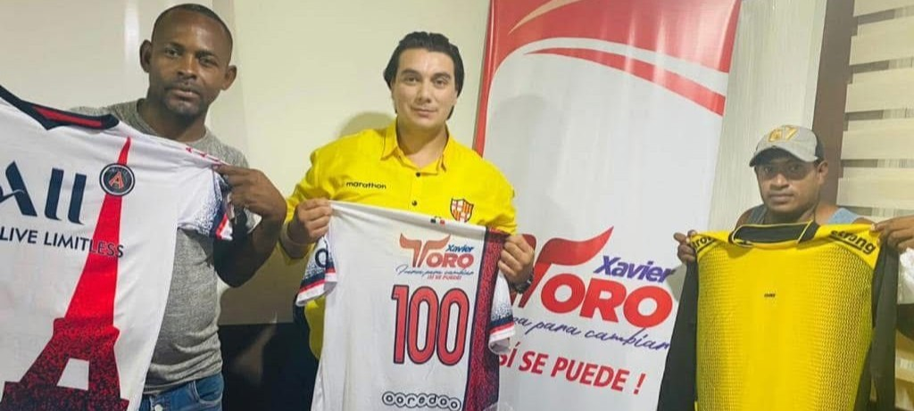
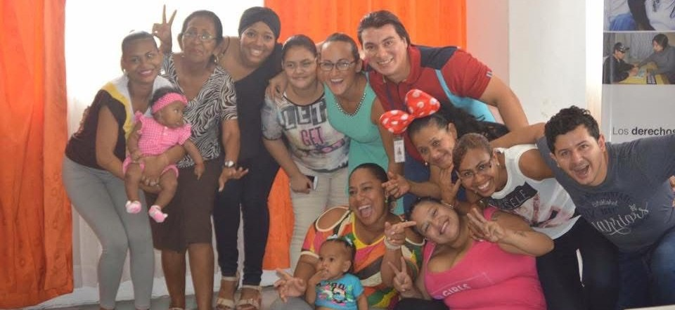
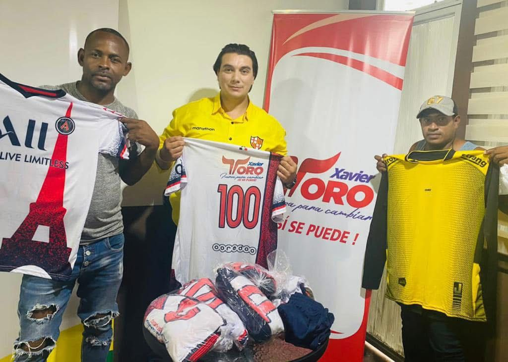
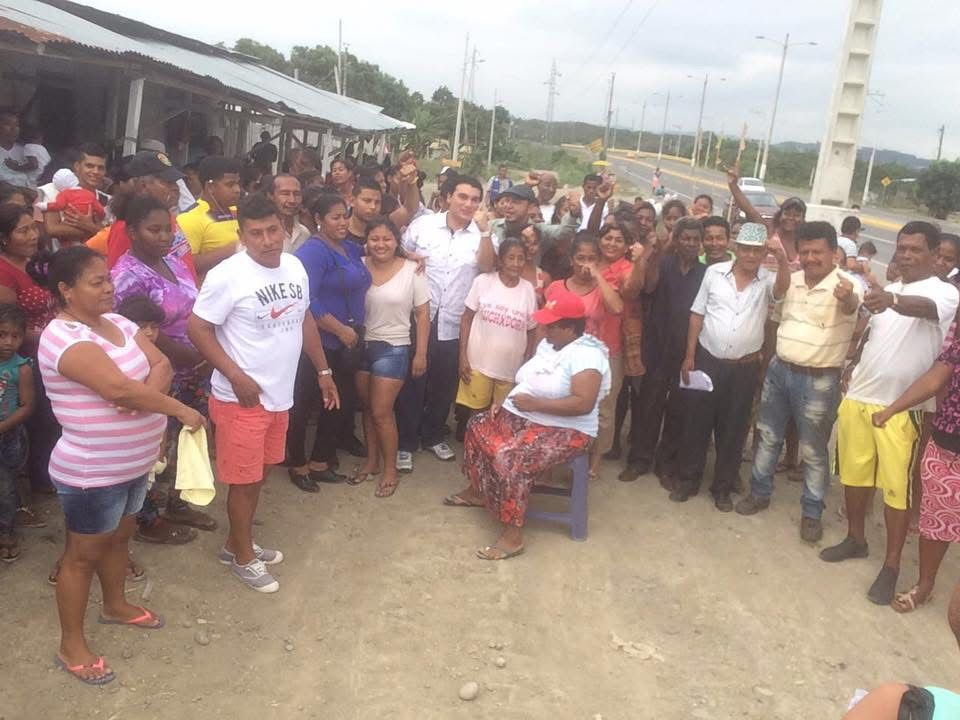
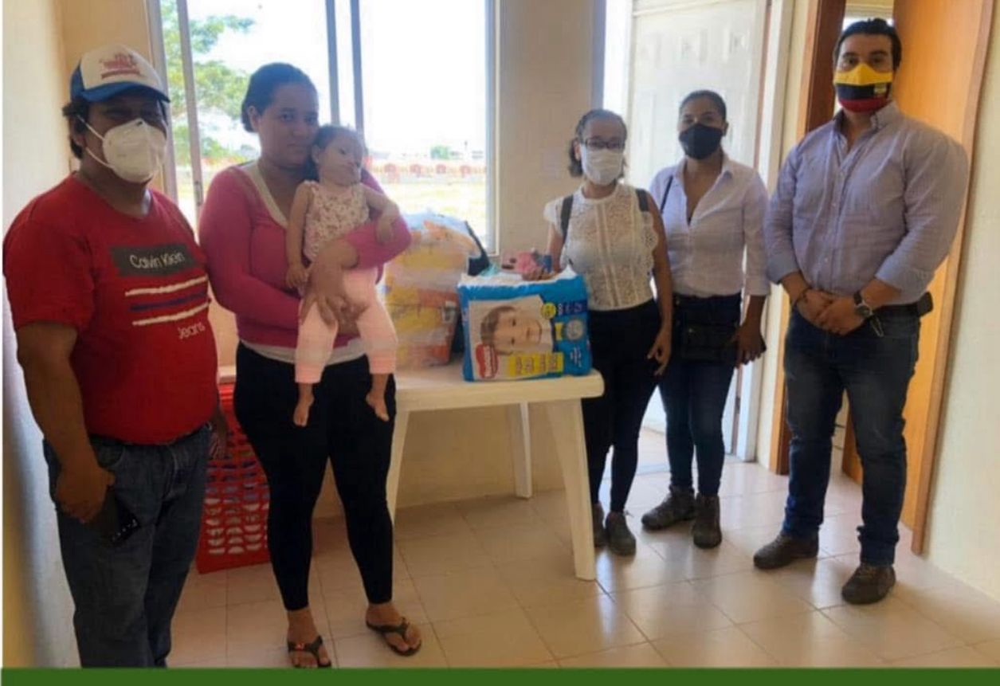

DeporteComo parte de su compromiso con el desarrollo social y la integración comunitaria, la fundación realizó la entrega de indumentaria y equipamiento deportivo...
Ver publicaciónLa Fundación Sí Se Puede llevó a cabo la clausura del programa de formación dirigido a mujeres emprendedoras, brindando herramientas prácticas...
Ver publicación
ComunidadLa Fundación Sí Se Puede desarrolló una jornada de atención social dirigida a familias del sector, brindando apoyo directo y acompañamiento comunitario...
Ver publicación
Ayuda HumanitariaLa Fundación Sí Se Puede realizó la entrega de ayuda humanitaria a una familia del sector, brindando insumos básicos para la atención y cuidado...
Ver publicaciónSe realizó la entrega de una silla de ruedas a una persona adulta mayor, brindándole mayor independencia y calidad de vida...
Ver publicaciónLa dignidad de nuestros adultos mayores no se discute, se defiende. Menos discursos, MÁS ayuda...
Ver publicaciónHoy reafirmamos nuestro compromiso con la comunidad educativa de la Escuela Julia Stupiñán Tello, ubicada en el barrio 20 de Noviembre...
Ver publicaciónGracias por apoyar a la Fundación. Elige el monto que deseas donar: